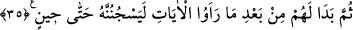

Âyetin işârî yorumu şöyledir: Kalb, dünyanın emrine ve nefsinin heveslerine
uymadığı, beşerî isteklerinin çağrılarına icabet etmediği zaman şeriatın ve Allah’ın özel
korumasının zindanında hapsedilmiş demektir. Bir kalb herhangi bir peygamberin kalbi
kadar kâmil bile olsa, kendi tabîatıyla baş başa bırakıldığı takdirde -eğer Allah
kendisini dünyanın tuzaklarından, beşeri arzuların âfetlerinden, nefsin fısıltılarıyla
şeytanın vesveselerinden korumazsa- bütün bunların kendisini dâvet ettiği şeylere
meylederek son derece zâlim ve câhil nefisler gürûhundan olur. et-Te’vîlâtü’n-
Necmiyye’de böyle geçmektedir.
Hâfız der ki:
Allah’ın lütfu yar olmazsa şeytanın tuzağı çok çetindir,
Yoksa Âdem şeytan-ı racîme zor ve hîle ile gâlib olamaz
Cenab-ı Mevlâ’dan zâhirî ve batınî düşmanlarımıza karşı bize güç ve zafer ihsan
etmesini niyaz ederiz. Çünkü yegane yardımcımız O’dur.
35. Sonunda (Aziz ve arkadaşları) kesin delilleri gördükleri halde yine de onu bir
süre zindana atmaları kendilerine uygun geldi.
“Sonunda” Aziz ve aklı başında arkadaşları “kesin delilleri” yani küçük bir sabînin
şâhidliği, gömleğin arkadan yırtılmış olması ve bunlar gibi Yûsuf’un suçsuz olduğuna
şâhidlik eden şeyleri “gördükleri halde yine de” ‘Vallahi onu zindana atacağız.’
diyerek “onu bir süre zindana atmaları kendilerine uygun geldi.” Buradaki ‘sonra’
kelimesi, Yûsuf hakkındaki önceki kanâatlerinin değiştiğini gösteriyor.
“Bir süre”den maksad, insanların dedikoduları bitene kadar demektir. Bu izah,
Aziz’in ve onun has adamlarının aklına ilk anda gelen görüştür. Züleyhâ’ya göre “bir
süre”nin mânâsı, zindan onu iyice alçaltıp boyun eğdirinceye kadar ve herkes suçlunun
o olduğu iddiasına kanıncaya kadar, demektir.
Böylece Yûsuf zindanda beş ya da yedi sene kaldı. Ancak bu konudaki meşhur görüş,
‘birkaç sene daha zindanda kaldı’ (Yûsuf, 12/42) âyetinin tefsirinde belirtileceği
üzere on iki sene kaldığıdır.
Şeyhzâde der ki: “Bu âyette Yûsuf’un hapsedildiği müddeti gösteren bir şey yoktur.
Bilinen tek şey, “uzun bir zaman sonra (Yûsuf’u) hatırladı’ (Yûsuf, 12/45) âyetinden
anlaşıldığı kadarıyla uzun bir müddet hapsedilmiş olduğudur.
Âyetteki “
(bir süre)” kelimesi, lügatçilere göre başı sonu belli olmayan bir
zamandır. Çok uzun süreler için kullanıldığı gibi kısa süreler için de kullanılır.
Fakihlere göre ise biri aklından herhangi bir vakit geçirmeksizin: ‘Vallahi, falanca ile